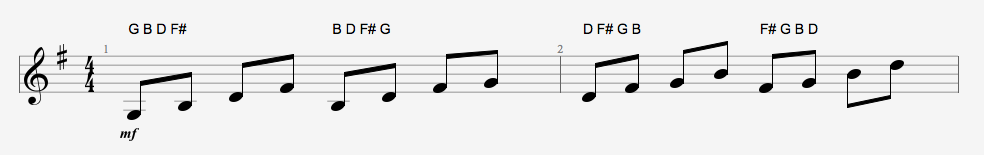
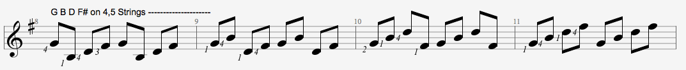
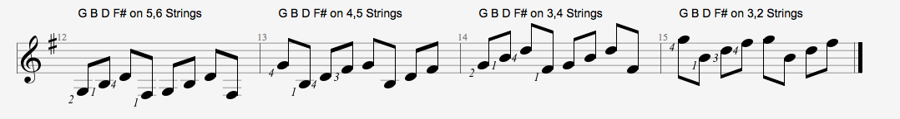
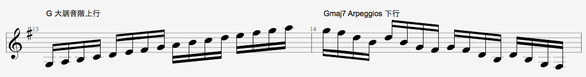
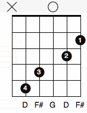
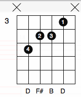
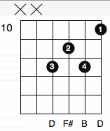
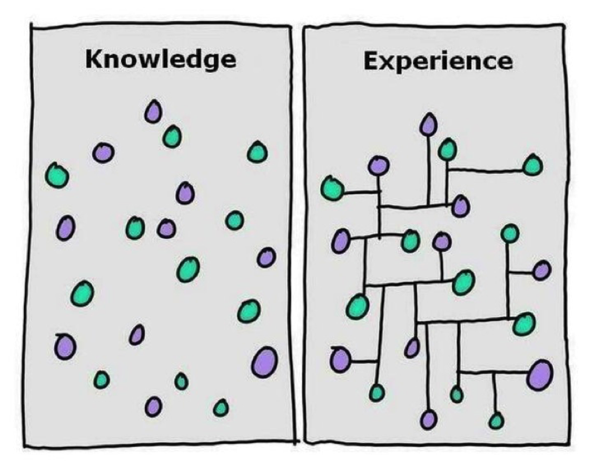

吉他琶音練習 - 以 Gmaj7 為例
發布日期：2015-03-08
Arpeggios 中文翻譯成『琶音』，也就是把和弦組成音，做排列的彈奏，是音樂專用術語。
先講結論。
在吉他的學習過程中，Arpeggios 很常跟 “Sweep (掃弦)” 搞混。Sweep 是演奏技巧、手法，用來詮釋、表現音樂的方法，重點在於『怎麼彈』；而 Arpeggios 是表現音樂本身的內涵，也就是用來創造語意的，著重於『彈什麼』。
到 Youtube 用關鍵字 “Guitar Arpeggios” 會找到一堆 Sweep 的教學。
用語言學習來說明，Sweep 比較像是如何寫文字的方法，像是書寫字型用宋體、標楷體、黑體 … 等，然後寫出來的東西在視覺上有不同的意境、美感；Arpeggios 就是文章內容，像是『白日依山盡，黃河入海流』，呈現寫作的人想要傳達的語意、意涵、意念 … 等。
『怎麼彈』是技術性的問題，大部份透過有效的學習方式，以及一定程度的練習，是不難達到的。『彈什麼』是音樂性的問題，也就是包含演奏者想表達的內涵、創意。
Arpeggios 的練習，重點在於幫助創造，創造人們想要表達的語意、想法、意念。只要是負責旋律的樂器 (Keyboard、Strings、Brass) 都是很重要的，對於學習即興、創作更是重要且基本的課題。
基本練習概念
一、密集聲位
基本的練習概念就是將和弦組成音做排列組合後，然後把音符依序彈奏出來。轉位和弦 (Chord Inversion) 是最常練習的方式之一，如下 Gmaj7：

他們就是依序的把和弦音的排列組合彈出來：
- G B D F#: 從根音開始
- B D F# G: 從三度音開始
- D F# G B: 從五度音開始
- F# G B D: 從七度音開始
彈的都是相鄰的音，也就是 密集聲位 (Closed Voicing) 的配置。也可以以某『一個音』為基準，做反覆的 sequence (模進)，像以下的練習：

也可以用『兩個音』做基礎造句，下面的例子就是用『GB』和『BD』做基礎，像是這樣：

這樣的組合很容易創造出具備音樂性的句子，或者是伴奏的 phase / riff 等。練習的時候可以多思考這些組合，可以加入一些技巧，像是悶音、垂勾、滑音、藍調音、改變拍子等。
二、遠距聲位
只要組成音超過一個八度，都是 遠距聲位 (Open Voicing)。同樣是 G B D F# 四個音，每次彈都可以把其中某一個高八度、或者低八度練習，這樣會有很多種排列組合，以下的例子就是 G B D F# 的次序，然後改變八度音的變化，像這樣：

其他轉位和弦內音的組合，像是『B D F# G』、『D F# G B』 … 等，也都可以用同樣的方法思考。
以即興作曲來看，通常會運用 動機發展 (motivic development) 的方式來延伸。
※ 版權所有，謝絕轉載，請尊重著作權 ※
吉他的練習
吉他練習的思考方式，從指板上來看有兩種，第一種是依照把位方式，也就是『吉他音階學習引導』提到的五種把位，這也是大部份吉他教學的方式，這邊我就不贅述。第二種是橫向思考，也就是只彈固定幾根弦，像是只彈一、二弦，或者二、三弦、或者跳弦一、三弦、或者固定彈一二三弦… 以此類推。
以下是我自己設計的一套練習方式，目的是訓練音符思考為主，呈現方式都是五線譜，技巧為輔，所以不會有六線譜。如果覺得看譜速度太慢，就專注在把位上找音名，也是可以的。
先修課程
要練習本文提到的，首先最好練過這些東西：
- 五個把位的音階，知道怎麼找到八度音，參考 『吉他音階學習引導』
- 五個把位的和弦，知道怎麼找每個和弦的位置，參考『吉他和弦聲位基本概念』
- 知道怎麼看五線譜，知道把位上音名的位置該怎麼找。
- 左手曾練過一定程度的擴張練習
練習原則與概念
知道正在彈什麼東西，所以練習目的在於：『用腦袋驅動手指頭』，以 Gmaj7 為例，掌握以下原則：
- 思考 Gmaj7 組成音：G B D F#
- 依序找出這四個音，在指板上所有的位置
- 找出幾個會出現的形狀，和已知的和弦做圖像的連結
- 在心裡反覆念這四個音，思考他們的先後關係
- 思考這四個音和 G 的音程關係
- G - B: 大三度、G - D 完全五度、G - F# 大七度
- G 是主音，所以音程的思考以 G 做參考點，不用找其他像 B D 的關係
- 練過 Sweep 的同學，暫時把那些指型都忘記。深度思考每一個音符本身還有音程關係。
- 每次用兩根弦彈奏，例如：
- 在 1 / 2、5 / 6 弦彈奏這四個音
- 也可以不用相鄰的兩根弦，例如：1 / 3 弦、2 / 5 弦找這四個音
- 彈的時候不用管八度音，只要依序彈出這四個音，遇到找不到的就升 or 降八度
- 腦袋先想到音，再用手指去找指板上的位置
- 不要用眼睛看指板 (關燈，近視的把眼鏡拿掉)，用耳朵聽，心理思考音符，反覆 (1)
- 開 Click，用 tempo = 60，八分音符的速度練習
- 彈奏過程中，只要不知道正在彈什麼音，請馬上停下來，重來。
基本練習: Arpeggios on 2 Strings
這是我練習的例子，有興趣的朋友請自行試看看，五線譜標的數字是左手指法，同樣的，重點還是在『用腦袋驅動手指頭』。
註一：此練習先不使用空弦音，空弦音應用參見下一段介紹
註二：此練習左手需要相當擴張 (左手五格以上的距離)，所以沒有練過基本的爬格子，不要勉強。手無法擴張，直接的替代方式，可以利用滑音的方式。
第一、二個是固定在兩根弦上做練習，從低把位移動到高把位，然後反覆。


第三個則是在各兩組弦間移動，因為版面關係，譜的例子只放四小節，有興趣的朋友可以自行擴張其他把位，找出其他音的位置。

搭配音階練習
Gmaj7 搭配 G 大調音階，吉他基本功裡面提到的各個把位，配合上下行的基本練習，把琶音放進去。

如果現在練習的和弦是小和弦，那麼音階就跑小調音階。
除了大調音階，當然吉他手要很熟的五聲音階也可以拿來一起玩。把原本琶音內容加上二、六度音 (A 和 E) 就可以是五聲音階了，組成音會變成：G (A) B D (E) F#

可以搭配音階，當然也可以搭和弦練習，以 4/4 為例的練習
- 一、三小節彈和弦
- 二、四小節彈 Arpeggios
不同按法的 Gmaj7
一些思考的方式：第一種是搭配空弦音應用，找出不同的 Gmaj7 按法，製造出具空間感的聲響，這是利用吉他特性的變化。第二種是利用轉位和弦，加上簡化和弦的概念，而形成的按法，利用這兩個想法，可以找出很多不同的按法，如下：




還可以舉例很多，留給大家去找。
其他的練習方式
其他還有很多東西可以搭配練習，以下先列舉這些思路：
- 搭配
調式音階：Xmaj7 主要會搭配 Lydian 練習，加入增四度。 - 搭配
延伸和弦：Gmaj7 來說，除了彈自己的和弦內音，可以另外彈 Am 琶音，變成在彈 Gmaj13 的琶音。 搭配 Licks：找一些歌曲的句子來練習，Santana 的經典演奏曲 Europa 第一句就是 Xmaj7和弦串接：本文只專注在 Gmaj7，其實也是間接延伸了 Xmaj7 全部，同樣的依照此方法，把 Xm7、X7 都找出來，練習過，例如 Am7 和 D7，然後就可以串這些和弦了。這三個剛好是 ii-Ⅴ-I of G，然後以此延伸到其他調性，或者一些和弦進行。找個人一起練習：互相漏氣求進步，像下影片：
六線譜的問題
很多吉他教學習慣用六線譜，而『六線譜』表現『怎麼彈』的訊息，而不是著重於『彈什麼』，所以很多學習者，到最後在網路抓了一堆六線譜，可能可以彈出一些東西，但往往對於歌曲的內容是不知所云，腦袋裡只有格子數，卻沒有節拍、音程、和弦功能、解決等音樂的概念，簡言之，就是具備吉他演奏技術，但不具備音樂性。
這跟背了一推詩詞歌賦、八股文，沒有消化、理解，無法下筆成文、出口成章、言之有物一樣。
特別用吉他來說明，是因為吉他和鍵盤樂器的差別在於，吉他轉調簡單，但是吉他把位相對於鋼琴複雜，又因為有六線譜的關係，造成學習者比較少思考的現象。
大部份的鋼琴學習都是用五線譜，但我也看過不少只會用手指頭彈，但是不會思考的鍵盤手。所以上述六線譜的說明，不是必然的。我覺得這還是跟教育方式有關係，這些感嘆，紀錄在我之前和一位樂壇前輩閒聊的內容。
有個笑話這樣形容吉他手和鍵盤手：把五線譜放在吉他手前面，他什麼都彈不出來了；把五線譜從鍵盤手前面拿走，他什麼都不會彈了。看到這裡應該不難懂了吧 XDD
除了本文舉例的 Gmaj7，接下來呢？延伸他吧！Gmaj7 可以是任何的大七和弦，所以就是 Xmaj7，然後變化成屬七和弦 X7，然後小七 Xm7，然後把這些東西串起來。同樣的問題又來了，這麼多怎麼練？好好思考時間管理，好好思考如何安排練習。
連結
下圖是出自漫畫家 Hugh MacLeod 在 Twitter 上的一張圖，簡單表達了資訊與知識、知識與經驗的差異，而我的 blog 實際上很多時候都把這些已知的資訊或知識重新整理，然後連結成為我個人的知識。而每次我也都會回去反覆思考過去寫的東西，並且試圖將他們連結。

Photo Credit: Hugh MacLeod
在本文討論的資訊，也就是 Hugh MacLeod 圖中的每一個點，可以是和弦的一個音符、或者一個和弦、一組和弦進行，他們連接起來之後，就會變成和弦、句子、節奏、段落、歌曲 …
在『練習的層次』一文最後，也提到類似的概念，資訊 -> 知識 -> 智慧 -> 資料 的演變，端看學習者如何再將他們做連結，透過連結會得到新的思路與想法，甚至是創意。
習慣這樣的方式之後，我歸納出創新就是『舊的東西 (資料、資訊、知識)，用新的方法 (連結) ，就是創意』，與『練習的層次』提到的創意方式是截然不同的體悟。 我又昇華了 XD
延伸閱讀
站內資料
- 吉他琶音 (Arpeggios) 的練習 - 251 of G Major
- 吉他和弦聲位基本概念
- 吉他音階學習引導
- 『怎麼彈』和『彈什麼』
- 吉他的基本功
- 如何安排練習 - 以上班族為例
- 吉他的空弦聲響
- 吉他手怎麼練習音感
- 練習的層次
參考資料／延伸閱讀 (站外)
- 琶音的介紹與應用
- 沒什麼是原創的：把知識連起來就是創意
- Motif development
更新紀錄
- 原文位址：https://rickmidi.blogspot.com/2015/03/arpeggios-gmaj7.html
- 2015/03/08: 初版